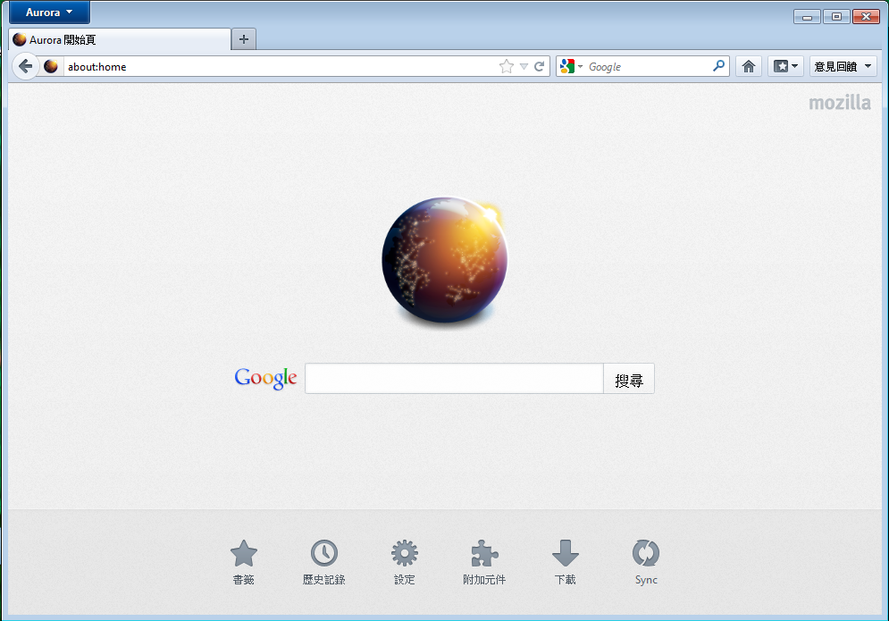
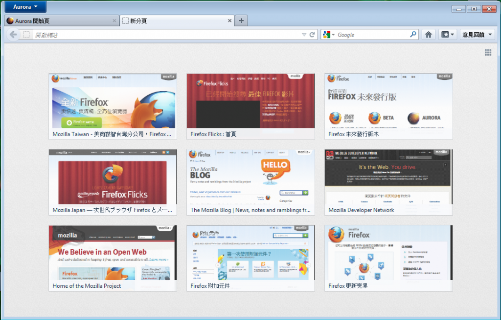

新版 Firefox Aurora 已經可以下載測試！
最新的 Firefox Aurora 今起公開測試，此版中有開發中新分頁畫面、首頁重新規劃、智慧位址列自動完成網址等功能。

Firefox Aurora 新鮮事：
- 開新分頁時，會出現最近及最常瀏覽的網頁縮圖，以方便快速前往。
- 新版首頁提供使用者許多功能捷徑，可以在同一個地方取用書籤、瀏覽歷史記錄、附加元件、檔案下載歷程及 Firefox Sync 設定。新版首頁目前正在開發中，未來還會持續改良。
- 智慧位址列將協助您在輸入時自動完成網址。

您現在就可以下載最新版的 Firefox Aurora，也別忘了提供意見回饋。對於這些新功能的意見，都能幫助我們了解該怎麼改良隨後的 Beta 及正式版。
更多資訊：